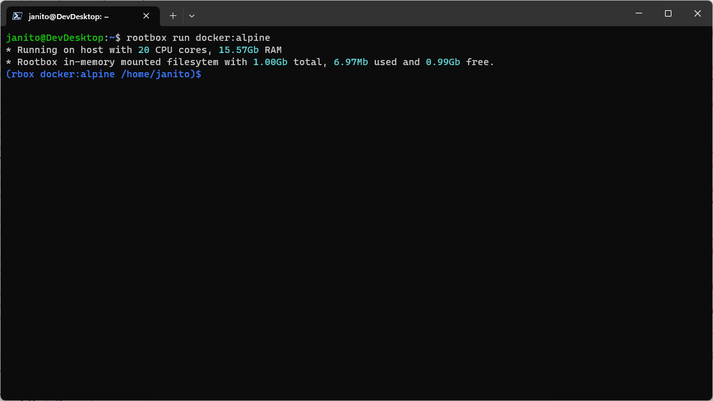

rootbox
What is rootbox?
Rootbox is a tool for Linux and WSL that allows regular (unprivileged) users to deploy applications in a portable and reproducible way.

How does it work
Rootbox uses Linux kernel namespaces to create contained environments.
What is the difference between rootbox and Docker?
The focus of rootbox is to provide a tool that can be used to run applications without the need to install dependencies on the host system. Rootbox does NOT aim to provide full isolation between environemtns and the host, for such use cases please consider using Docker or Podman.
What is nedded to run rootbox?
- A Linux distrubtion or Linux on Windows with WSL (Kernel version >=4.18)
- Python 3.8, 3.9, 3.10 or 3.11
- Only 64-bit architectures are supported
What applications can I run with rootbox?
- images from the Linux Containers project (LXC).
- images from the Docker Hub registry (Docker Hub)
Supported package managers
| Status | Tool | Distros |
|---|---|---|
| ✅ | apk | Alpine |
| ✅ | pacman | ArchLinux |
| ✅ | dnf | Alma; CentOS; Fedora; Rocky |
| ✅ | xbps | VoidLinux |
| ✅ | zypper | openSUSE |
| ❌ | apt | Debian/Ubuntu |
How to install
pip install rootbox
How to use
List all the distributions available from the LXC project
# Check the list of supported distro names in the table above
rootbox lxc list
Run an in-memory single run container
Run a shell in an Alpine Linux container
rootbox run lxc:alpine:3.17
Check the apk version:
rootbox run lxc:alpine:3.17 "apk --version"
Create an in-memory multi run container
rootbox create lxc:alpine:3.17
Execute a command in a container
rootbox execute lxc:alpine:3.17 "apk --version"